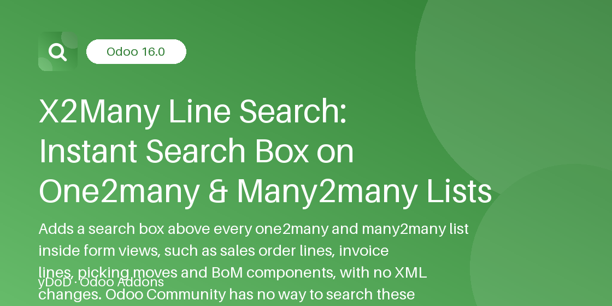
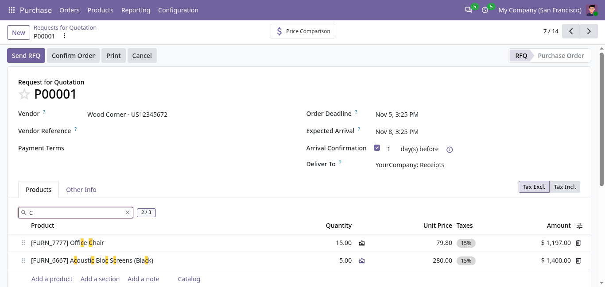
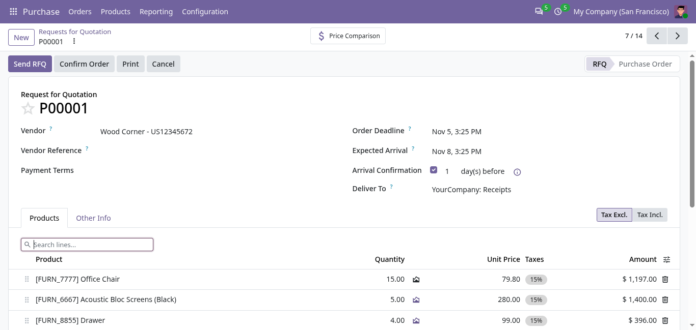
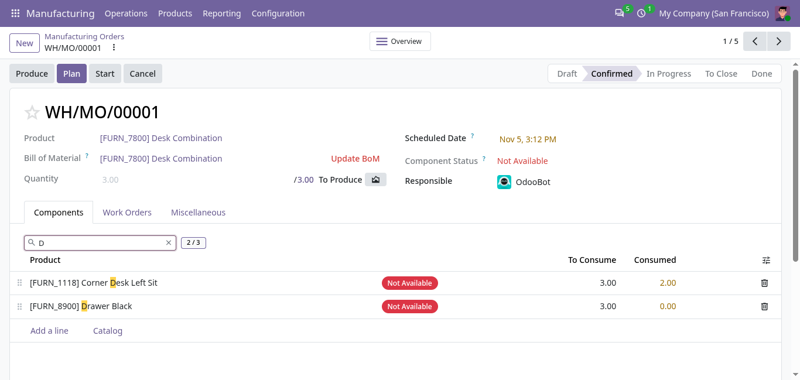
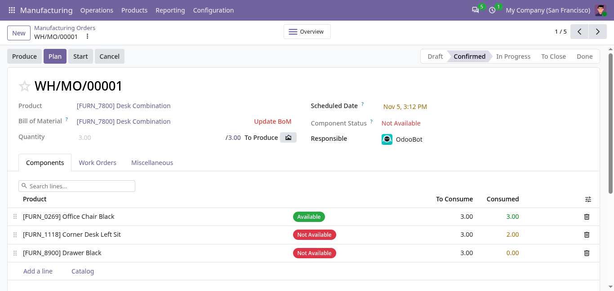

Related Modules
Work even better together with yDoD apps for Odoo 19.0.
yDoD · WEB USABILITY
An instant search box above every one2many and many2many list in your forms. Find any order line, invoice line, stock move or BoM component in a keystroke — with highlight, match counter and zero configuration.
Odoo 20.0 Community & Enterprise





Odoo forms embed long lists of lines: a large quotation, a supplier bill with hundreds of lines, a picking with many moves, a bill of materials with dozens of components. Odoo Community offers no way to search inside these embedded lists. Users scroll, or use the browser's Ctrl+F, which misses every line that sits on another page of the list. The usual workaround is a smart button opening a separate list view, which has to be built for every model.
X2Many Line Search fixes this everywhere at once. As soon as the module is installed, a search box appears above every one2many and many2many list in form views — no view to edit, no field to configure. It is built for sales, purchase, inventory, manufacturing and accounting users who work on documents with long line lists, and for Odoo integrators who want this usability fix on every form of every customer database.
Works on every x2many list in form views, including section_and_note_one2many, without editing XML.
Remaining lines are loaded once, then every keystroke filters in the browser.
Matches text, many2one names, tags, selection labels, numbers and dates.
Matching text is highlighted and a live counter shows e.g. 12 / 340.
Rows are only hidden: unsaved edits and new lines are never lost.
Jump into the search box with Alt+F, clear it with Esc.
Turn the feature on or off for everyone from General Settings.
No new models, no database tables, no external libraries.
Open any form with a one2many or many2many list — a quotation's Order Lines, a bill's Invoice Lines, a picking's Operations, a BoM's Components, or the Fields list of a model in Settings. A clearly bordered box with a magnifier icon, the placeholder Search lines... and a clear (×) button sits on its own row right above the list, never covered by the list or its pager, and stays pinned on top while you scroll through long lists; it uses the native Odoo 20 icon font and keeps the typed text readable in every form theme. It works in readonly and edit mode, and also in forms opened in dialogs.
Every field column of the list is searched: descriptions, product and partner names (many2one), tax and tag names (many2many), selection labels such as a status, quantities and prices as displayed (12.50) and formatted dates. Any part of a word matches, anywhere in the row, including the line description that the product widget displays under the product name. Matching text is highlighted in the cells and the counter next to the box shows matching lines over total lines, for example 3 / 120. Click the button to clear.
options="{'line_search': False}".options="{'line_search': False}" on fields where no search box is wanted.No. The box is added automatically above every list-mode one2many and many2many field in form views, including those of other apps you install later.
Every internal user sees the box on forms they can already open; record access rights are unchanged and the search only uses lines the user is allowed to read. Only Administrators (Settings access) can change the global switch.
Yes. The switch is database-wide and the search works on whatever lines the form loads for the current company context.
No. Filtering only hides rows with CSS; no line is reloaded or discarded, and the edited line and new lines always stay visible.
It adds no models or tables, only one system parameter. The only server request is the single load of remaining lines on the first search of a paged list.
The search boxes disappear and the setting is removed. Your documents and lines are untouched.
Questions, issues or a custom feature for your workflow? yDoD is happy to help.
Dody Ahmad Kusuma Jaya — yDoD
Work even better together with yDoD apps for Odoo 19.0.